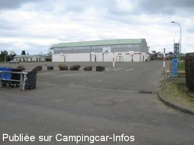
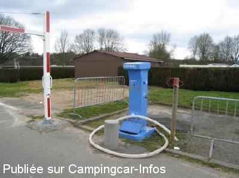
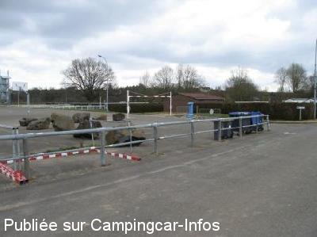

AS = Aire de services uniquement de :
SABLÉ SUR SARTHE
(N° 615)
Accès/adresse :
Rue du Québec
72300 SABLÉ SUR SARTHE
72300 SABLÉ SUR SARTHE
Latitude : (Nord) 47.8315° Décimaux ou 47° 49′ 53′′
Longitude : (Ouest) -0.33194° Décimaux ou 0° 19′ 54′′
Tarif : 2016
Services : 3 €
Type de borne : FLOT BLEU
Services :


Poubelles
Autres informations :
http://www.sablesursarthe.fr

Le 23/02/2009 par pierre56

Le 23/02/2009 par pierre56

Le 23/02/2009 par pierre56
de
jacques
le 14/09/2013 :
aire de service seulement. pour stationner la nuit, un parking a été ouvert aux camping cars rue michel vielle, en bord de Sarthe, près de l'aire de jeux d'eaux, gratuit et près de tout commerce (500 mètres env)
aire de service seulement. pour stationner la nuit, un parking a été ouvert aux camping cars rue michel vielle, en bord de Sarthe, près de l'aire de jeux d'eaux, gratuit et près de tout commerce (500 mètres env)